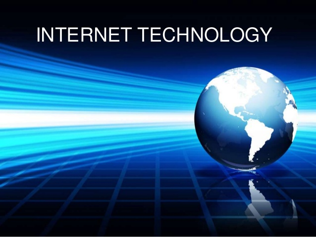

The Internet (or internet) is the global system of interconnected computer networks that uses the Internet protocol suite (TCP/IP) to communicate between networks and devices. It is a network of networks that consists of private, public, academic, business, and government networks of local to global scope, linked by a broad array of electronic, wireless, and optical networking technologies. The Internet carries a vast range of information resources and services, such as the inter-linked hypertext documents and applications of the World Wide Web (WWW), electronic mail, telephony, and file sharing.
The origins of the Internet date back to the development of packet switching and research commissioned by the United States Department of Defense in the 1960s to enable time-sharing of computers.[1] The primary precursor network, the ARPANET, initially served as a backbone for interconnection of regional academic and military networks in the 1970s. The funding of the National Science Foundation Network as a new backbone in the 1980s, as well as private funding for other commercial extensions, led to worldwide participation in the development of new networking technologies, and the merger of many networks.[2] The linking of commercial networks and enterprises by the early 1990s marked the beginning of the transition to the modern Internet,[3] and generated a sustained exponential growth as generations of institutional, personal, and mobile computers were connected to the network. Although the Internet was widely used by academia in the 1980s, commercialization incorporated its services and technologies into virtually every aspect of modern life.
